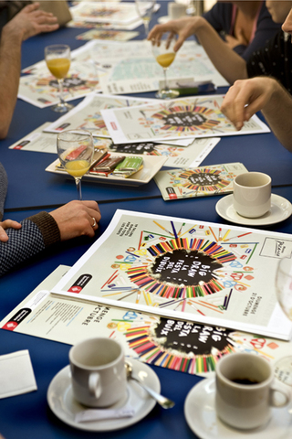

Per tercer any consecutiu torneu a fer punta als llapis que el diumenge 21 d’octubre torna el Big Draw! Aquesta festa és una proposta originària de Londres que poc a poc es va estenent arreu del món. Llapis, retoladors, pintures, cartrons, pinzells, papers i paperets… tots els materials són vàlids per deixar volar la imaginació [...]
Per tercer any consecutiu torneu a fer punta als llapis que el diumenge 21 d’octubre torna el Big Draw! Aquesta festa és una proposta originària de Londres que poc a poc es va estenent arreu del món. Llapis, retoladors, pintures, cartrons, pinzells, papers i paperets… tots els materials són vàlids per deixar volar la imaginació i començar a dibuixar, des dels més petits als més grans, el dibuix no té edat!
Molt contents amb els resultats dels anys anteriors, aquest any tornem a repetir l’experiència amb més talleristes, espais i col·laboradors.
Per escalfar motors, ahir vam fer una trobada dels talleristes, centres i patrocinadors participants: una oportunitat per saludar-nos i compartir la il·lusió pel projecte, així com fer una reflexió sobre les diferències i semblances entre aquesta edició, que significa una mica la consolidació de la proposta, i les anteriors.
Foto de família dels talleristes
La primera semblança és que, com en altres anys, el temps ens fa patir!!! S’anuncien pluges i més pluges (en aquest any tant sec, benvinguda sigui la pluja, però no podria ploure el dilluns 22?) En cas de pluja, no es cancel·la res i s’han previst espais alternatius pels tallers a l’aire lliure: podreu trobar la informació al web del Big Draw, La Festa del Dibuix.

El director del museu presentant als talleristes
Altres semblances amb les anteriors edicions és que el projecte manté una mida similar i el número de tallers no varia gaire: són 19 tallers en total, repartits pels barris de La Ribera, Santa Caterina i Sant Pere, tots ells gratuïts i pensats per a totes les edats. Donem la benvinguda a l’Antic Teatre, que hi participa per primer cop, i celebrem la implicació, un any més, del Palau de la Música, el Cercle Artístic Sant Lluc (que funciona com a segona seu del Big Draw, amb un dels dos punts d’informació), la Biblioteca Francesca Bonnemaison, l’Escola Eina, La Seca Espai Brossa, el Centre Cívic Convent de Sant Agustí i el Museu de la Xocolata.
Presentació dels talleristes
Entre els canvis cal destacar un d’important pel que fa a l’organització interna, i que té una enriquidora repercussió externa. Enguany les diverses institucions participants s’han fet càrrec del disseny i producció dels seus tallers, i això ha tingut com a resultat uns tallers més variats que mai, on el dibuix s’explora des de les disciplines pròpies de cada centre.
Aquest canvi és una mostra clara de la implicació de les institucions veïnes amb el Big Draw i possibilita la seva continuïtat. També ha estat important l’aportació dels sponsors, Staedtler i Canson-Guarro, sense els quals el projecte no hauria pogut mantenir les dimensions actuals.
A tots ells i als talleristes volem agraïr molt la seva participació en aquest projecte, que no hauria estat possible sense ells. I també aprofito per agrair a l’equip que aquests mesos ha estat treballant de ferm perquè el Big Draw sigui una realitat: Mercè, Manel, Mònica, Ariadna, Anna i Cristina.
Qui hi pot participar?
Tothom que vulgui! Els tallers gratuïts estan pensats per a totes les edats, així que no hi ha excusa, segur que trobeu algun que us agradi!
On i quan?
D’11h a 19h de forma ininterrompuda hi haurà tallers repartits per diferents espais dels barris de Santa Caterina, Sant Pere i la Ribera. Trobareu també punts d’informació al Museu Picasso i al Cercle Artístic Sant Lluc.

Plànol Big Draw 2012
I si plou?
En cas que les previsions meteorològiques es compleixin el diumenge potser plou una mica, però no patiu! Tots els tallers que es fan a l’aire lliure es traslladaran sota cobert. Consulteu la fitxa del taller al web o bé dirigiu-vos als punts d’informació el mateix dia.
Com podem saber-ne més?
A través del web del Big Draw. El disseny gràfic d’aquest any ve de la mà de Cocolia.
Equip de Cocolia, dissenyadors de la imatge gràfica d’enguany
Segueix-nos al Twitter del Big Draw on sota el hashtag #bigdrawbcn anirem twittejant la jornada i penjant fotos. I si en teniu ens les podeu fer arribar. També al Facebook del Museu Picasso i al Flickr anirem penjant imatges.
El diumenge 21 d’octubre vine a passejar pel barri i anima’t a dibuixar!
Anna Guarro
Programes Públics
Enllaços relacionats
Com muntar un Big Draw (versió Museu Picasso) – 2011
Big Draw. La Festa del Dibuix en imatges! – 2011
El dibuix com a protagonista – 2010
Un post post – Big Draw – 2010